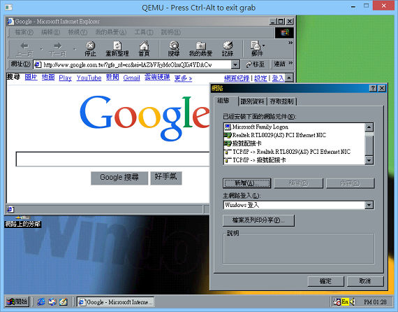
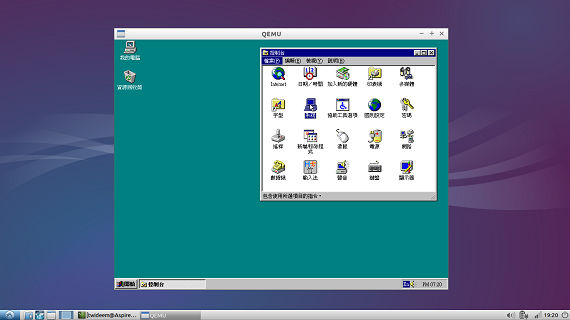

用 QEMU 0.9.x 搭配 ImgBurn 和 7-Zip 玩 Windows 9x
QEMU 可以只留 6 個檔案約 2.37MB，就能跑 Windows 9x，非常輕量級：bios.bin、fmod.dll、libusb0.dll、qemu-system-x86_64.exe（或 qemu.exe）、SDL.dll、vgabios-cirrus.bin。
但只有 QEMU 0.9.x 適合跑 Windows 9x，新版不但開始笨重，而且只適合安裝新式作業系統。
QEMU 可以掛載 *.img 磁碟或 *.iso 光碟，但免費軟體中，並沒有方便存取映像檔的 UltraISO 可用，這部分改用 ImgBurn 自己製作 *.img 和 *.iso 掛載到 QEMU，再搭配 7-Zip 從映像檔取出資料。
接下來是更詳細的介紹～
準備
QEMU 0.9.x
請至 https://www.h7.dion.ne.jp/~qemu-win/ 下載 qemu-0.9.0-windows.zip，解壓後就得到 QEMU 0.9.0。[1]
Windows 98 開機片
請連到 https://www.allbootdisks.com/download/98.html，展開 Disktte Images 後下載 Windows98_SE.img，即為 Windows 98 開機片。請放在 QEMU 目錄裡面，並建議重新命名為 floppy.img。
Windows 9x 安裝光碟
手上沒有 Windows 9x 安裝光碟的話，可至滄者極限討論區的《Windows 95 OSR2.5 繁體中文版》第 4 頁[2] 取得。
安裝
請使用「MS-DOS 模式」或「命令提示字元」，切換路徑到 QEMU 目錄。
Step 1: 建立用來安裝 Windows 9x 的硬碟映像檔
輸入如下指令：
qemu-img create master.img 1G
QEMU 資料夾裡面，就會出現名為 master.img 的檔案，這就是用來安裝 Windows 的硬碟。
你可以視個人需求，將 1G 硬碟大小改為 500M 或 2G 之類。
Step 2: 以 Windows 98 開機片啟動 QEMU（等於開機）
輸入：
qemu -L . -M pc -m 64 -fda floppy.img -hda master.img -boot a
然後選擇：
2. Start computer without CD-ROM support.
就會看到 A:\>，表示以 DOS 模式開機了～
Step 3: 切割硬碟
輸入：
fdisk
然後依序選擇：
Y → 1 → 1 → Y
完成後，系統顯示：
所以請按 Esc 退出回到 A:\> 狀態後，關閉 QEMU 當作關機的動作。（你可能要按 Ctrl+Alt 才能用滑鼠按 X 關閉 QEMU。）
Step 4: 格式化硬碟
重新以如下指令開機：
放入 Windows 9x 安裝光碟的人請使用
qemu -L . -M pc -m 64 -fda floppy.img -hda master.img -cdrom E: -soundhw sb16 -localtime -boot a （請視你光碟機代號修改指令的 E:）
下載 Windows 9x 映像檔的人請使用
qemu -L . -M pc -m 64 -fda floppy.img -hda master.img -cdrom cdrom.iso -soundhw sb16 -localtime -boot a
然後選擇：
1. Start computer with CD-ROM support.
進入 A:\> 狀態後，輸入：
format c:
然後按 Y 格式化後，再直接按 Enter 即可。
Step 5: 安裝 Windows
建議將光碟片的 Windows 安裝檔案，全部複製到 C 槽，然後才執行 Windows 安裝程式：
md c:\Setup
copy e:\win95 c:\setup
c:\setup\setup /is
接下來都是圖形化介面，照畫面指示安裝吧～
Step 6: 啟動 Windows
安裝好 Windows 以後，基本上用如下指令就能開機：
qemu -L . -M pc -m 64 -hda master.img -soundhw sb16 -localtime
需要掛載另一顆硬碟，或者加裝網路卡的話，再附加其它參數進去～
心得
善用虛擬光碟片讓 QEMU 的 Windows 存取實機 Windows 的檔案或程式
例如下載了驅動程式，你可用 ImgBurn 製作成 *.iso 檔，然後把這張虛擬的光碟片掛載給 qemu，就能在進入 Windows 9x 後，從光碟機中安裝它：
qemu -L . -M pc -m 64 -hda master.img -cdrom cdrom.iso -soundhw sb16 -localtime
在 https://www.claunia.com/qemu/drivers/index.html 可以下載許多專為 QEMU 準備的驅動程式。
擴充硬碟
你可用 qemu-image 再建立一個任意大小的 slave.img 映像檔，然後執行 qemu 添加時 -hdb slave.img 參數，例如：
qemu -L . -M pc -m 64 -hda master.img -hdb slave.img -soundhw sb16 -localtime
進入 Windows 後，「我的電腦」裡就會看到多了 D 槽這個硬碟，經格式化，你的 Windows 9x 就能安裝或保存更多檔案了。
存取 QEMU 中 Windows 9x 硬碟的檔案
如果有 UltraISO 的話，那 QEMU 人生就是彩色的，它能讓你任意加入或刪除 *.img 裡面的檔案。不過這是商業軟體，而免費軟體中並沒有同樣好用的替代品。
目前折衷方案是：
取出檔案：用 7-Zip 從 *.img 中提出檔案。
加入檔案：用 ImgBurn 將檔案轉為虛擬光碟片，讓 QEMU 掛載與讀取。
刪除檔案：進入 QEMU 的 Windows 刪除囉～
目前正透過 alternativeTo 列出的清單，尋找 UltraISO 的替代品中，但 WinISO 或者 Linux 的 Iso Master 都不支援磁碟用途的 *.img 檔。
網路卡
要讓 Windows 上網的話，必須以 -net nic,model=ne2k_pci -net user 參數掛載 網路卡，例如：
qemu -L . -M pc -m 64 -hda master.img -soundhw sb16 -net nic,model=ne2k_pci -net user -localtime
網路卡沒正常驅動的話，就不能上網，底下是心得：
Windows 95 的話，建議、建議、再建議！先安裝網路卡的驅動程式，然後重新開機，再關機來掛載網路卡，這樣開機才「有機會」偵測到網路卡，因為 Windows 95 的隨插即用很笨，一搞混找不到的話，很可能再也找不到。（這時可以改用 -net nic,model=rtl8139 -net user 參數，換掛載 Realtek RTL8139/810X Family PCI Fast Ethemet NIC 網路卡，但是記得！請先裝好 8139 的驅動程式！別又犯同樣的毛病了！）
Windows 98 的話，必須先到「開始」→「設定」→「控制台」→「系統」→「裝置管理員」，將「Plug and play bios (fail safe)」的驅動程式改為「PCI 匯流排」，重新開機才能偵測到「Realtek RTL8029(AS) PCI Ethernet NIC」網路卡！
搞定網路卡後，依序操作「開始」→「設定」→「控制台」→「網路」→「新增」→「通訊協定」→「Microsoft」→「TCP/IP」，然後將「主網路登入」設定為「Windows 登入」，重新開機，就能在 QEMU 用 Windows 開 IE 上網了～

在 Linux 跑 QEMU 裝的 Windows 9x
同樣 0.9.x 版的 QEMU 才適合，所以到 https://old-releases.ubuntu.com/ubuntu/pool/universe/q/qemu/ 下載 qemu_0.9.1-5ubuntu3_i386.deb 來用：

這時 qemu 的 -soundhw 參數建議改為 all，但我的 Linux 筆電還是抓不到音效卡，而且滑鼠游標滑起來太快，並不好用，裝來過過乾癮而已～
軟體
在 https://www.oldversion.com 可以下載到很多 Windows 9x 年代的安裝程式，例如 Dreamweaver 3 或 Flash 4 這些讓人懷念的 30 天試用版軟體～
在 https://netcrack.com 可以找到破解試用版的程式 0.0